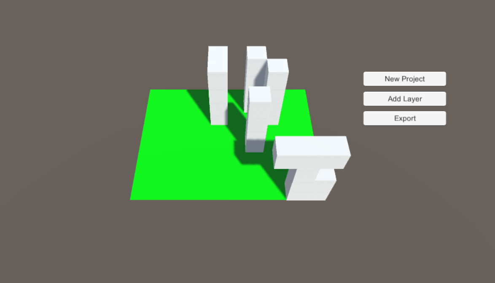

stack.
2016/Assistive Tech
stack. is a working prototype for a device that can help people with visual disabilities to create simple 3D models using the tactility of Legoes. Using computer vision via OpenCV, Unity3D, and a Lego board, the user can prototype and then 3D print simple cube-based models that they create layer by layer. Here is a quick video:
Here is the prototype interface:
The implementation is still a bit simple, but I am currently working on implementing a more robust and accessible interface, mainly adding audio cues and programming the Unity3D portion out into a standalone application.